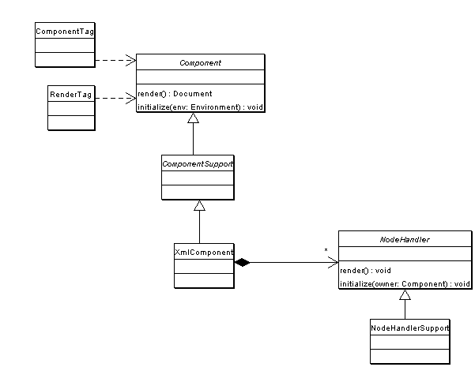

The RendererTag is associated with a Renderable instance (it will lookup the Renderable in the users session). It renders the Document retrieved by getDocument() via an XSLT stylesheet. There may be parameters for the stylesheed provided by the RendererParameterTag, local (valid for a single transformation) or global (valid for all transformations). If the Renderable happens to implement the Visible interface, it will be rendered only if isVisible() returns true.

A Component is created by a ComponentTag and rendered by a RenderTag. A Component produces a DOM that is rendered via XSL stylesheet.
An XmlComponent is a component that holds a DOM, NodeHandlers may be attached to the Elements of the XmlComponents DOM.

A {@link com.tonbeller.wcf.component.Form} instance is where {@link com.tonbeller.wcf.component.FormListeners} can be registered -- they receive events
Form implements the FormListener interface, so
forms may listen to each other. For example, the selection in a
{@link com.tonbeller.wcf.table.TableComponent} is
read when the user presses the OK button in a {@link com.tonbeller.wcf.form.FormComponent}
To register the table's form is registered with the FormComponent do:
FormComponent form = ... TableComponent table = ... form.getForm().addFormListener(table.getForm());